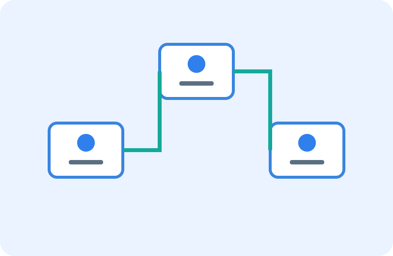

Cloud architecture
Build a cloud foundation that is secure, resilient and ready to scale.
Make cloud decisions with a clear view of architecture, operating model, risk and long-term cost.
Cloud strategy with architecture at its core.
We help define cloud adoption patterns and target architectures that fit your applications, data, security requirements and operating capabilities.
- Cloud readiness and workload assessment
- Landing-zone and account architecture
- Application migration and modernization strategy
- Identity, network, security and observability patterns
- Resilience, performance and cost optimization
